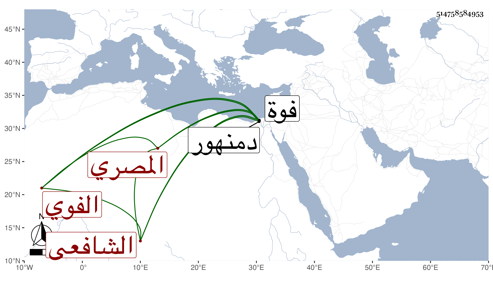

0902Sakhawi.DawLamic.ITO20230111-ara1.EIS1600.514758584953
Biography ID: 514758584953
971
علي بن محمد بن أحمد بن محمد بن محمد بن أبي بكر العلاء بن البدر المصري الأصل الفوي الشافعي الآتي أبوه ويعرف كهو بابن الخلال بمعجمة مفتوحة ثم لام مشددة . ولد بفوة ونشأ يتيما فحفظ القرآن وغيره وعرض واشتغل في الفقه وأصوله والغربية وغيرها ومن شيوخه الزين زكريا والجوجري وابن قاسم والبكري والعلاء الحصني وتميز في الفضائل وأخذ عني الألفية وغيرها بحثا وكتبت له إجازة بديعة مرة بعد أخرى وكذا أذن له غير واحد في التدريس والإفتاء ، وحج وخطب بجامع ابن نصر الله بفوة بل ناب في القضاء عن الزين زكريا في دمنهور وغيرها مع سكون ولطف ذات وما كنت أحب له القضاء بل سمعت من يتكلم في جانبه فإنا لله .
